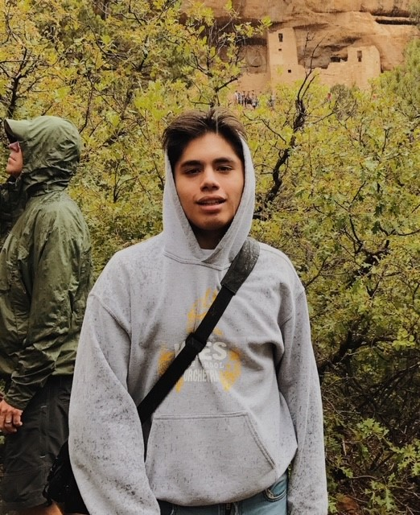

My name is Josimar Vela and I am a 21 year old
Mexican-American photographer who has been taking pictures for more
than 6 years now. I am from Dallas, Texas and I am
a triplet. I have an older brother and my triplet siblings
are one boy and one girl. I enjoy taking pictures in my free time
and I want to be able to share my pictures in magazine
one day.
Experience
I have been taking pictures since I was 15 years
old. I went to community college in Texas to get an associates
degree in commercial photography. I have also had a year
of photoshop and adobe lightroom. I have also been
able to take pictures for peoples birthdays and been
commissioned by more than 50 people from this year.
Equipment/Tools
The equipment that I use is a Canon T5 camera
with an EFS 18-55mm lens as well as am EF 50mm 1:1.8 STM
camera lens. I use photoshop as well as lightroom to edit
my pictures as well as an application called VSCO to
put in final edits.